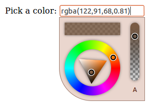

Color Picker Screenshots
-
Basic color picker usage. Inline mode, with all default options.

-
Inline mode, small, non-resizable.

-
Static mode, color preview in input element.

-
Sample integration with jQuery-UI dialog.
External controls in side panel with multiple color modes.

-
Sample integration with jQuery-mobile dialog.